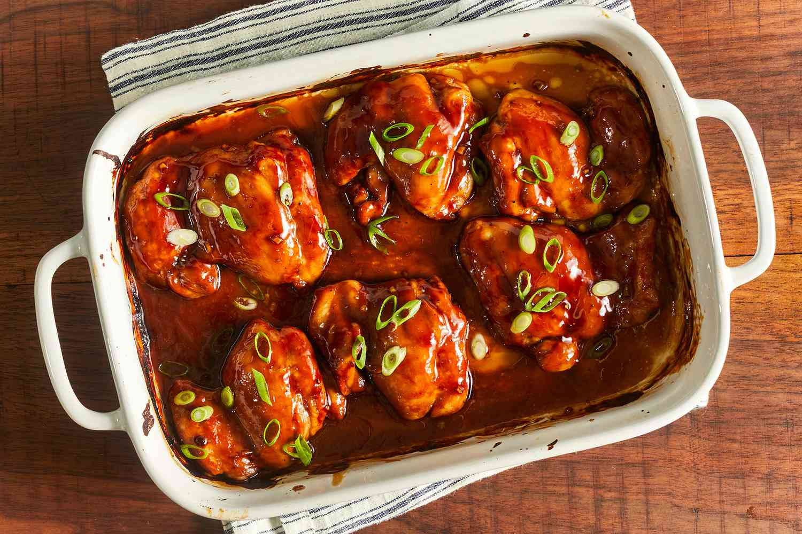

Baked Teriyaki Chicken

Description
This teriyaki chicken recipe uses a homemade teriyaki sauce to glaze chicken thighs that are baked in the oven for
the most delicious sticky chicken. This is a much-requested recipe in our house! Easy to double for a large group.
Ingredients
- 1/2 cup white sugar
- 1/2 cup soy sauce
- 1/4 cup cider vinegar
- 1 tablespoon cornstarch
- 1 tablespoon cold water
- 1 clove garlic, minced
- 1/2 teaspoon ground ginger
- 1/4 teaspoon ground black pepper
- 12 boneless, skinless chicken thighs